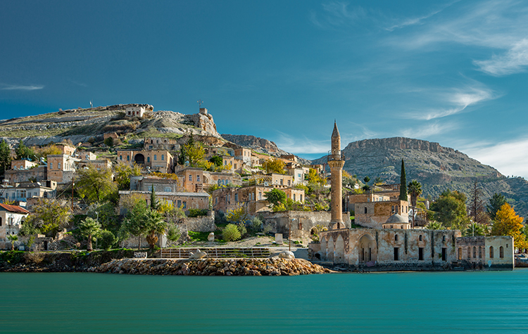
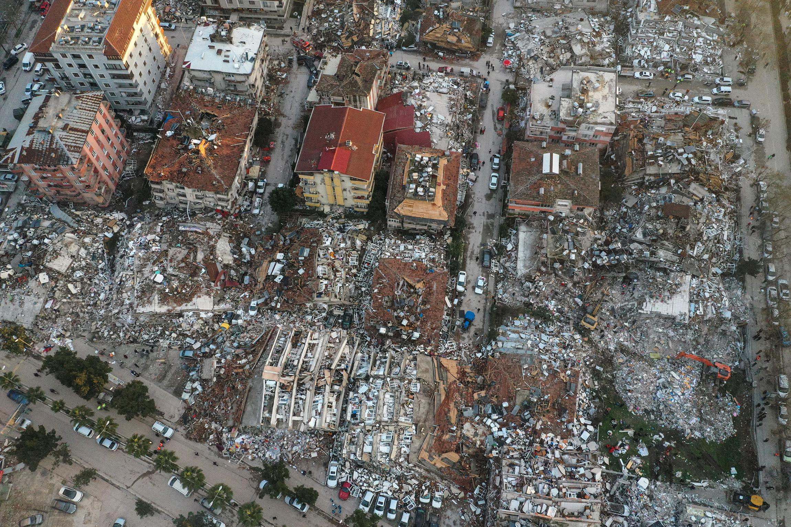

Турция до землетрясения и после:


Что делать при землетрясении?
- Не паникуйте.
- Найдите безопасное укрытие.
- Избегайте окон и тяжелых предметов.
Как подготовиться к землетрясению
На случай, если при сильном землетрясении вы примете решение покинуть здание, заранее наметьте путь движения с учетом малого запаса времени — около 15–20 секунд до наибольших колебаний и толчков.
Заранее определите наиболее безопасные места, где можно переждать толчки. Это — проемы капитальных внутренних стен (не перегородок!), углы, образованные внутренними капитальными стенами, места у внутренних капитальных стен, у колонн и под балками каркаса..
Учтите, что наиболее опасными местами в зданиях во время землетрясения являются большие застекленные проемы наружных и внутренних стен, угловые комнаты, особенно последних этажей, лестничные проходы.
Укрытием от падающих предметов и обломков могут служить места под прочными столами и кроватями; научите детей прятаться туда при сильных толчках в отсутствие взрослых. Проведите дома репетиции.
Заранее прочно закрепите шкафы, этажерки, стеллажи, полки к стенам, к полу. Мебель следует разместить так, чтобы она не могла упасть на спальные места, перекрыть выходы из комнат, загородить двери.
Прочно закрепите или переместите вниз тяжелые и ценные вещи, стоящие или лежащие на полках или на мебели, (вазы, телевизоры, компьютеры, утюги и т. п.).
Не устраивайте полки над спальными местами, раковинами, унитазами. Закройте переднюю часть полок с посудой, установите прочные защелки на дверцы шкафов и полок.
Надежно закрепите люстры и люминесцентные светильники. Не используйте стеклянные абажуры. Проверьте надежность подвесных потолков.
Не загромождайте вещами вход в квартиру, коридоры и на лестничные площадки.
Емкости, содержащие легковоспламеняющиеся и едкие жидкости (пятновыводители, нитрокраска, инсектициды), должны быть надежно закупорены и храниться так, чтобы они не могли упасть и разбиться при сильных колебаниях.
Не располагайте спальные места у больших оконных проемов, стеклянных перегородок.
Имейте дома:
запас консервированных продуктов и питьевой воды из расчета на 3–5 дней;
аптечку первой медицинской помощи с двойным запасом перевязочных материалов (бинт, лейкопластырь, вата) и с набором лекарств, необходимых хроническим больным членам семьи;
переносной электрический фонарь, огнетушитель, например, автомобильный (заранее научитесь им пользоваться);
всегда имейте при себе сотовый телефон.
Храните документы в одном легкодоступном месте, желательно недалеко от входа в квартиру. Там же целесообразно хранить рюкзак, в котором следует иметь нож, фонарь, топорик, спички, зажигалку (новую), немного еды, аптечку, свечи, шерстяное одеяло, кусок полиэтиленовой пленки, запасную одежду и обувь (по сезону) в расчете на всю семью.
Во время сильного землетрясения
В помещении:
Если вы можете покинуть здание в течение первых 15–20 секунд, то сделайте это. Желательно взять с собой сотовый телефон. Выбежав из здания, сразу отойдите от него на открытое место.
Если вы остались в здании, то укройтесь в заранее выбранном, относительно безопасном месте. В многоэтажном доме можно распахнуть дверь на лестницу и встать в проеме.
Если есть опасность падения кусков штукатурки, светильников, стекол — прячьтесь под стол. Школьникам можно залезть под парты, отвернуться от окон. В любом здании держитесь дальше от окон, ближе к внутренним капитальным стенам здания. Бойтесь стеклянных перегородок!
Не создавайте давку и «пробки» в дверях!
Не прыгайте в окно, находясь выше первого этажа!
Не прыгайте в застекленные окна! При явной необходимости предварительно выбейте стекло табуреткой, в крайнем случае — спиной.
Держите при себе сотовый телефон, с его помощью вы сможете связаться со спасателями.
На улице:
Отойдите на открытое место подальше от зданий, линий электропередач. Бойтесь оборванных проводов!
Не бегайте вдоль зданий, не входите в здания — реальную опасность для жизни представляют падающие обломки.
После сильного землетрясения:
Окажите медицинскую помощь в первую очередь детям и наиболее нуждающимся.
Освободите попавших в легкоустранимые завалы. Будьте осторожны! Если требуется дополнительная, медицинская или другая специальная помощь, дождитесь ее.
Обеспечьте безопасность детей, больных, стариков. Успокойте их.
Включите радиотрансляцию или УКВ-радиоприемник. Следуйте указаниям местных властей, штаба по ликвидации последствий стихийного бедствия.
Проверьте, нет ли повреждений водопроводных сетей. Устраните неисправность или отключите водоснабжение.
Прежде чем пользоваться канализацией, убедитесь в ее исправности в пределах здания, подвала.
Не пользуйтесь открытым огнем.
Спускаясь по лестнице, проверяйте ее прочность.
Не подходите к поврежденным зданиям, не входите в них.
Обнаружив разлив бензина, ацетона и т. п., удалитесь на безопасное расстояние от места разлива на случай их возгорания.
Не выдумывайте и не распространяйте никаких слухов о возможных следующих толчках. Пользуйтесь официальными сведениями.